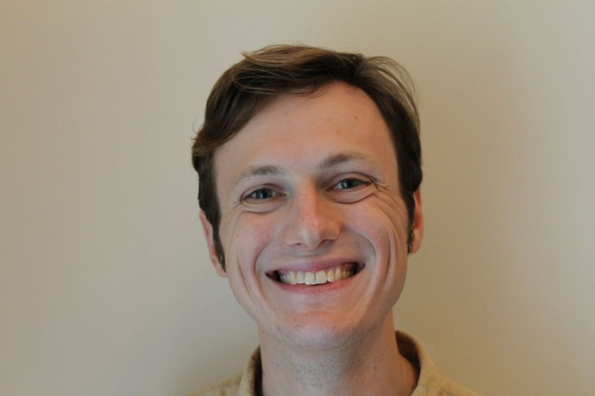

I'm a PhD student in the Human-Computer Interaction Institute at Carnegie Mellon University, since fall 2012. Advised by Jason Hong.
Email:
In person: NSH 2502C (as of 2014-15), or find me relatively often at Commonplace Voluto Coffee. I look kind of like this:
